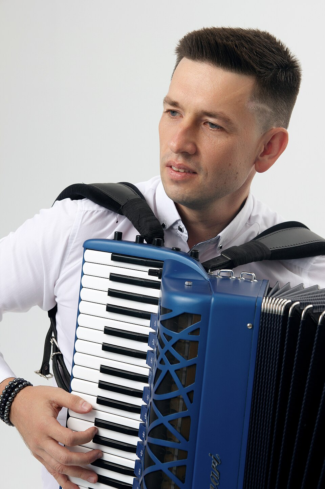

12 января 1981 года в семье Виктора Васильевича и Валентины Никифоровны Поелуевых родился младший сын, которого назвали Александром. Мальчик рос очень любознательным и активным, всегда имел множество увлечений, доводил начатое до конца. Увидев в сыне живой интерес к красоте и искусству, отец решил отвести сына в музыкальную студию при детском клубе «Орлёнок». В студии Сашу, по просьбе отца, мечтавшего играть на аккордеоне, взял к себе на обучение педагог Александр Сергеевич Шачнев, который и привил юному аккордеонисту настоящую любовь к музыке. В «Орлёнке» Саша посещал ещё и все возможные кружки: выжигал по дереву, рисовал на стекле и даже пытался освоить духовые инструменты, однако, главным его пристрастием с той поры и до сих пор остаётся аккордеон. В «Орлёнке» Саша занимался с 1987 по 1991 годы. С 1991 года Александр учился в детской музыкальной школе им. Чайковского в Ростове-на-Дону в классе Заслуженного деятеля Всероссийского Музыкального Общества (Русское музыкальное общество) Инны Николаевны Пилипенко. Она остаётся безусловным авторитетом для Александра и в настоящее время, а тогда под её руководством он осваивал аккордеон. В характере у юного музыканта было стремление доводить начатое до конца, именно это качество помогло ему уже в 12 лет стать лауреатом конкурсов и не сомневаться в том, что музыка — это его призвание. Концерты, конкурсы, творческие вечера, знакомство с известными музыкантами и даже первые гастроли — творческая жизнь всё больше увлекала его.
После окончания детской музыкальной школы им. Чайковского Александр поступил в Ростовское государственное училище искусств в настоящее время — Ростовский колледж искусств. Там наставником музыканта стал Сергей Сергеевич Галкин — Заслуженный работник культуры РФ. Окончив первый курс Ростовского училища Александр отправился покорять Москву. В то время Александр Поелуев мечтал попасть в класс легендарного музыканта и педагога Вячеслава Анатольевича Семёнова, преподававшего в Московском государственном музыкальном колледже им. Шнитке. В то время, помимо многочисленных музыкальных занятий, он увлекался спортом, а всё свободное время проводил на различных концертах, в музеях, в театрах и на выставках. В классе В. А. Семёнова царила особая атмосфера творчества, которая завораживала и вдохновляла. Александр с отличием закончил: МГК им. А. Шнитке, МГИМ им. А. Шнитке, РАМ им. Гнесиных, ассистентуру-стажировку РАМ им. Гнесиных. А в 2000 году студент колледжа им. Шнитке стал лауреатом Всероссийского конкурса в Белгороде.
После победы на Кубке мира среди аккордеонистов Александр Поелуев не переставал трудиться: было множество гастролей, приглашений и ко всем мероприятиям нужно было постоянно готовиться, что-то повторять, учить — на отдых времени не было. В 2005 году он становится лауреатом на конкурсе в Детройте, в 2006 году завоёвывает первую премию на впервые проводившемся конкурсе en:«Shanghai Spring». С 2005 года Александр Викторович Поелуев — уже успешный много гастролирующий музыкант 24 лет. Мечтатель с детства, целеустремлённый и уверенный в своих силах, он решает начать организацию концертов выдающихся аккордеонистов в родном городе Ростове-на-Дону. И первым таким гостем стал легендарный музыкант, аккордеонист Art Van Damme, которому на тот момент было 85 лет. Этот проект А. Поелуев смог организовать благодаря поддержке своих педагогов и друзей: И. Н. Пилипенко, В. А. Семёнова, Ю. В. Шишкина, С. А. Мажукиной, А. Х. Барашяна, Н. А. Мещеряковой. Концерт великого аккордеониста Art Van Damme с известным ростовским ансамблем «New Centropezn» состоялся 18 декабря 2005 года, в большом зале Ростовской государственной филармонии был аншлаг. Мечта юности Александра Поелуева стала реальностью. Позже у него возникла идея проведения международного фестиваля, а затем и конкурса «Аккордеон Плюс».
В апреле 2002 года Поелуев начал подготовку к Кубку мира среди аккордеонистов. В 2002 году имя Александра Поелуева становится главной сенсацией в мире аккордеонистов. Впервые в истории Кубка мира среди аккордеонистов (Coupe Mondiale) он берёт первую премию сразу в двух номинациях: «COUPE MONDIALE-SENIORS» и «PIANO ACCORDION CLASS». История Александра Поелуева на Кубке мира среди аккордеонистов началась с того, что на жеребьёвке ему достался первый номер. Но несмотря ни на что, Александр Поелуев достойно выступил в обеих категориях, завоевав первые премии в обеих номинациях. Полгода музыкального марафона увенчались ошеломительным успехом.
Команда единомышленников Александра Поелуева расширялась и вскоре переросла в Международный музыкальный центр «Гармония» (ММЦ «Гармония»), арт-директором которого Адександр Викторович является и в настоящее время. За годы существования ММЦ «Гармония» было организовано множество концертов с участием всемирно известных звёзд: Frank Marocco, Alain Musichini, Renzo Ruggieri, Roberto Molinelli, Виктора Власова, Владимира Мурзы, и многих других. Особенность работы центра «Гармония» заключается в том, что одновременно с концертами организовываются выставки музыкальных инструментов, к которым привлечены коллекционеры и мастера-реставраторы Ростовской области, а также российские и зарубежные фабрики музыкальных инструментов: АККО, Roland, Тульская Гармонь, Scandalli, Hohner, Pigini, Bugari. С 2010 года ММЦ «Гармония» проводит международный фестиваль «Аккордеон Плюс». В 2011 году инициативу «Гармонии» поддержало Управление культуры города Ростова-на-Дону, фестиваль стал включать в себя ещё и конкурс «Аккордеон Плюс».Сегодня конкурс состоит из 20 различных номинаций для участников всех возрастов, а участники приезжают не только со всех уголков России, но и из стран Европы и Азии. В сентябре 2016 сбылась ещё одна давняя мечта Александра Поелуева — впервые в истории России ММЦ «Гармония» совместно с Администрацией города Ростова-на-Дону провели старейший в мире конкурс аккордеонистов и баянистов — «Кубок Мира» (Кубок мира среди аккордеонистов). В рамках этого мероприятия прошло 9 концертов на крупнейших площадках Ростова-на-Дону. На конкурс приехали представители 5 континентов из 17 стран мира.
Полный оптимизма и творческих сил сегодня Александр Поелуев продолжает свой творческий путь. Гастрольная география Александра включает в себя 4 материка и более 30 стран мира, среди которых: Франция, Италия, Китай, США, Австралия, Новая Зеландия. Во многих странах Александр бывал с гастролями неоднократно. Он активно ведет социальные сети, его видео становятся вирусными и набирают миллионы просмотров в интернете.